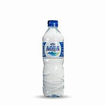
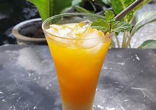

Makanan
Ayam Geprek
Ayam Lalapan
Ayam Mentega
Ayam Geprek adalah salah satu menu favorit dikalangan mahasiswa

Ayam lalapan perpaduan sayur-sayuran dan lauk ayam

Ayam mentega adalah lauk ayam yang dibaluri dengan mentega

Selamat datang, ada yang bisa kamu bantu?
Ayam Geprek adalah salah satu menu favorit dikalangan mahasiswa
Ayam lalapan perpaduan sayur-sayuran dan lauk ayam
Ayam mentega adalah lauk ayam yang dibaluri dengan mentega
Es krim buah yang segar dinikmati

Es dengan toping kacang tanah

Buah yang dibaluri oleh mayonise dan butiran keju

Air yang diambil dari pegunungan
Kopi hitam sangat cocok dinikmati setelah makan
Teh dengan rasa yang manis yang bisa dinikmati panas maupun dingin

Minuman yang sangat segar dengan rasa jeruk
